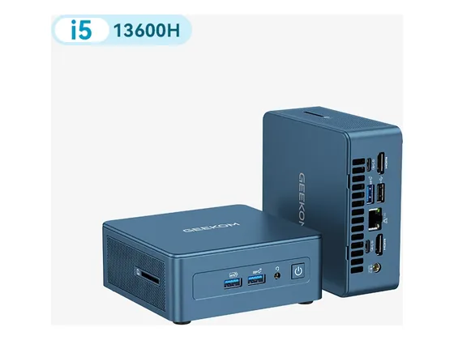
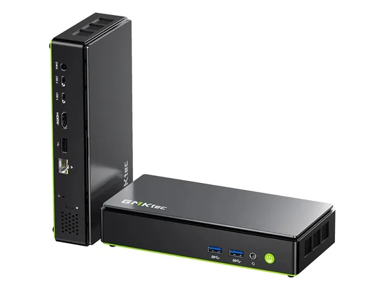
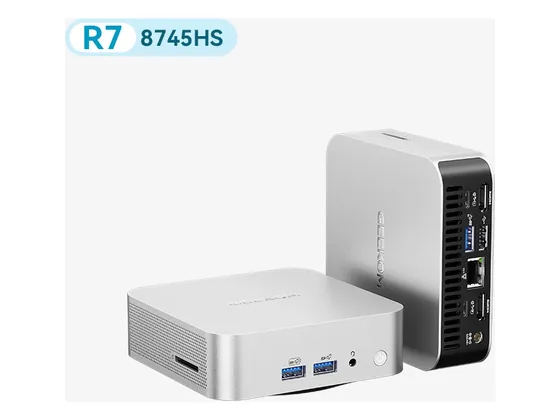

Geekom IT13 : avis, tests et prix
Le verdict en une phrase. Beaucoup de puissance dans un petit volume, avec lecteur de cartes et emplacement 2,5 pouces. Monte vite en température.
N° 2 sur 10 dans le top 10 mini-PC.

Pour qui ?
Vous voulez beaucoup de puissance dans un petit volume, avec lecteur de cartes.
Vous êtes sensible au bruit du ventilateur en charge.
Le consensus de la presse
Sur 19 notes, 16 atteignent ou dépassent 8/10. La plus haute : 9,0/10 (AndroidPit) ; la plus basse : 6,0/10 (Neozone). Dernier test relevé : septembre 2026.
Où l'acheter
La configuration peut différer d'un marchand à l'autre : vérifiez la fiche avant d'acheter. Liens d'affiliation : ils n'influencent ni les notes ni le classement.
Tous les tests recensés
Chaque ligne renvoie vers le test d'origine. Les notes sont converties sur 10 ; « test » signale un article sans note chiffrée. Notre méthode.
- AndroidPit9,0
- Basic Tutorials9,0
- Neowin9,0
- Neowin9,0
- TechAeris9,0
- Windows Central8,6
- AndroidPC.es8,0
- CowCotLand.com8,0
- Frandroid8,0
- IT Pro8,0
- LeCafeDuGeek8,0
- NerdTechy8,0
- PhonAndroid8,0
- TechPowerUp8,0
- TechRadar8,0
- tuttoteK8,0
- Notebookcheck7,9
- Notebookcheck7,5
- Neozone6,0
- Actu High-Techtest
- AndroidPC.estest
- AndroidWorldtest
- AndroidWorldtest
- ChinaHandystest
- GBATemptest
- Mighty Gadgettest
- PC Magazintest
- TechTesttest
- TechXReviewstest
- wccftechtest
Source du relevé : Synthèse CommentChoisir.
Les alternatives pour le même usage
Tout le top 10 →
GMKtec NucBox K13Très fin, très discret et remarquablement sobre grâce à la plateforme Lunar Lake. La RAM soudée limite son évolution. N° 4 · Le plus puissant du top
Geekom A8Très puissant pour sa taille et bien fini, avec une puce graphique Radeon 780M capable de jouer léger.Questions fréquentes
Que pense la presse de l'ordinateur Geekom IT13 ?
La note presse moyenne est de 8,2/10, calculée sur 19 notes (de 6,0 à 9,0/10). Beaucoup de puissance dans un petit volume, avec lecteur de cartes et emplacement 2,5 pouces. Monte vite en température.
Quels sont les points faibles relevés par les tests ?
Ventilateur bruyant en charge ; Pas d'USB-C en façade.
À qui s'adresse le modèle Geekom IT13 ?
Vous voulez beaucoup de puissance dans un petit volume, avec lecteur de cartes. À éviter si : vous êtes sensible au bruit du ventilateur en charge.
Où l'acheter, et à quel prix ?
Prix relevés le 02/10/2026 : 579 € chez Amazon ; 609 € chez Geekom. Les prix changent vite et la configuration peut différer d'un marchand à l'autre : seul le prix affiché par le marchand fait foi.